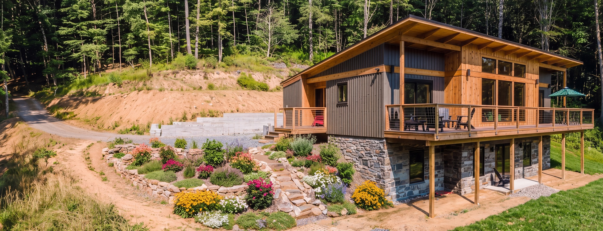
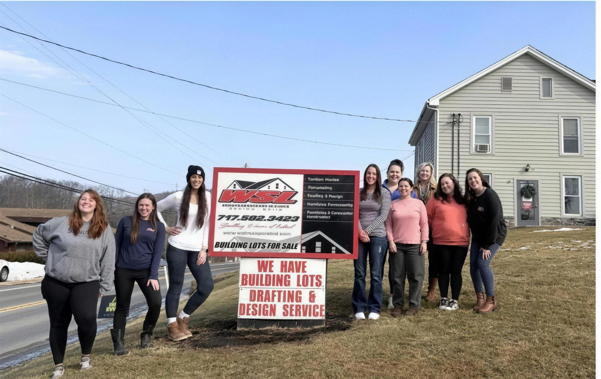
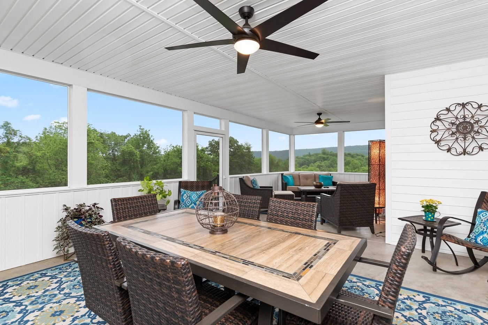

“We interviewed many builders to begin our process. From the first meeting, it was clear to us that WSL was going to be our builder of choice. ‘Service after the sale’ is what sets WSL apart.”
John Bechtel
July 2026

WSL INCORPORATED
CUSTOM HOMES · REMODELING · COMMERCIAL
PERRY, CUMBERLAND & DAUPHIN COUNTIES
4.7 on Google
START YOUR PROJECT
Custom homes designed and built in-house. One room from each finished job.
NEW BLOOMFIELD, PENNSYLVANIA

“We had a plumbing issue about a year after our build. Within a few minutes my phone rings — it was Josh, asking if he could come out around 7:00am, on a Saturday, to fix it.”
John Bechtel, July 2026
WSL has designed and built in Perry County for more than 35 years. Joshua Lesher became its second-generation owner in 2024. The design and drafting happens in the New Bloomfield office — nine people, in-house — so the plans and the build come from the same place.
39 reviews on Google
“We interviewed many builders to begin our process. From the first meeting, it was clear to us that WSL was going to be our builder of choice. ‘Service after the sale’ is what sets WSL apart.”
John Bechtel
July 2026
“During the build we had weekly meetings to update us on the progress. We were always welcome on the build site, and their follow up since building the home has been fantastic.”
April Turner
May 2026
“The folks at WSL were a pleasure to work with from start to finish. They made the process manageable and far less daunting than it could have been.”
Jacob Kiessling
March 2026
BEFORE YOU CALL
Straight answers on cost, schedule and what design-build means.
Turnkey, WSL's range runs $275 to $350 per square foot, excluding the land and well or septic if the lot needs them. Before you sign, the detailed proposal turns every allowance into a hard number, so the price is fixed rather than estimated.
Design and construction happen under one roof. The plans are drawn by the in-house designers and draftswomen in the New Bloomfield office, and the same company builds them — one contract from the first sketch through to warranty service.
A kitchen typically runs 6 to 12 weeks and a bathroom 6 to 10; a whole-home remodel or an addition is usually 4 to 6 months. Weekly photo updates and milestone walk-throughs run the length of the job.
Every residential project carries a two-year workmanship warranty. Commercial work is handed over with operation manuals and a one-year workmanship warranty.
Yes — no-step entrances, roll-in showers, first-floor suite conversions, home elevators and new VA-adapted builds. For eligible veterans we prepare the SAH grant paperwork, currently worth up to $77,307.
The office is on Spring Road in New Bloomfield and most jobs are within about an hour of it, across Perry, Cumberland and Dauphin counties. Carlisle, Mechanicsburg and Harrisburg are regular ground, and we build out toward Dillsburg, Hershey and Shermans Dale as often as anywhere.
The office is open 8:00 to 4:30, Monday to Friday. Saturdays and evenings by appointment.
Every residential project carries a two-year workmanship warranty.
8396 Spring Rd, New Bloomfield, PA 17068
The great room Custom home · stone to the ridge

Dining and living Custom home · open plan
The outdoor room Covered porch and fireplace

The kitchen Custom home · island seating

Cabinetry Built in, floor to ceiling
Vaulted and open Custom home · kitchen to living room